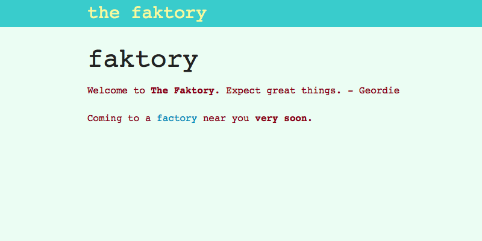

History
As a wise C programmer once told me, "When you make changes, things change." We all know this to be true, so we add tons of unit, functional and integration tests. Hopefully, a change in one area of the code does not break things in other areas. But with good code coverage we can be fairly confident that we will catch the unintended "things change" side affects.
Blah, blah, blah; We've all heard the arguments for testing. We either do it or we don't, but the idea is not new. Our development team drank the testing Kool-Aid long ago. But we didn't have a good way of keeping track of the visual changes within our application nearly as well as those in business logic. So along came this idea of appearance testing.
I have found appearance tests to be useful in refactoring shared partials. For example, say you want to change some CSS on a shared partial to make a particular page look better. The changes you make look great on that particular page but you don't know if you negatively affected any other page. Appearance tests will make it easy to know what deep dark corners of the app you touched. Engineering Manager
CI, Master Files and the Update Hassle
Our first incarnation of appearance tests were a suite of selenium-driven tests that set up a page, grabbed a screenshot of the page, and then did a pixel-by-pixel comparison of the test generated screenshot to a file from a previous run of the same test. this previous file came to be called a master file. The test was said to have passed if there were no pixels found to be different between the test file and the master file.
Our tests could be run on local development machines and were setup to run on our CI (Continuous Integration) system following every commit.
Quickly we saw that a passing condition of zero differences was too strict. We added some options in an attempt to allowed the test to ignore small changes that were more the result of various factors like screen resolution, rendering issues, window focus, etc. than real page failures. Things got a little better.
There were still false failures, but in general, our CI tests accurately reported real changes to our application's pages. But this opened up a whole new can of worms. The development team was in the business of changing our page all the time. That's what we do. We add functionality. We move things around. We remove bits of UI that are no longer needed. We write software for the interwebs. This means that the appearance tests were failing regularly.
I have felt appearance test pain as well. Blessing them is terribly difficult and I forget which png file to actually copy over every time. The feedback loop is terribly slow. Lastly, merging is nearly impossible if two engineers simultaneously change the appearance tests. The nice thing is that I hardly ever have to do any of these things but when I do its a real pain. Engineering Manager
This shouldn't really be a problem, right? I mean, we make changes to the back-end code that often requires a change to a unit test. Why expect anything less with front-end code? Easy answer is that we don't. The real problem was that it was a pain to wade through the false failures, rendering issues, and intended changes to decide if updating the master files with the new test files was appropriate (we came to call this process "blessing" new masters).
We also found that we ended up with the problem that files generated on a developer's machine did not match those generated on our CI machines. From one CI machine to the next, all was fine, but not from local to CI. This meant that even after the test failed on CI, for intended or unintended changes, the process of reviewing the results and blessing the new files was terribly painful. And as we all know, if it gets too painful, the tests stop being updated. And if the tests don't get updated, then they stay red. And if they stay red, then its better that they don't exist at all.
The tests did indeed find a handful of unintended changes that we were grateful to have caught. But before a year was out, the tests were abandoned.
We don't have appearance tests? WTF? When did that happen? Did we replace them with something? Anonymous Developer
Enter Ojo
It was still bothersome that we weren't doing any visual regression testing. So the guts of our old appearance testing gem was scavenged and Ojo was born. The image comparison routines were borrowed and adapted to fit into the CLI-style tests that Ojo supplies. Gone were the CI tests with their assertions and suite pass/fail criteria.
More importantly, gone were the master files.
Now Ojo simply compares two sets of screenshots and reports which ones are different and which ones are the same. Ojo really has nothing to do with the compiling of the data sets. Assuming that there are two sets of data in a configured location, Ojo will generate a report and a set of difference files. These difference files can be quickly scanned to see if the reported changes were of concern or not.
In our test suite, the abandoned appearance tests from round one were re-purposed to generate screenshots after page setup and manipulation. The tests were still done using our standard Selenium/Capybara test methodology. We just did away with the assertion that the first appearance test gem supplied and took screenshots that were named appropriate to the test and git development branch that the test were run in.
Example
The following steps are an example of how Ojo can be used. It shows the current setup that is used by our development team.
There are two kinds of steps listed in this example. The first are prep steps that don't have anything to do with Ojo proper. They are just preparing the data sets that will be compared. The second set of steps show those that are running the Ojo comparisons.
- git checkout master
- rake test:appearance
- git checkout feature_branch
- rake test:appearance
- rake ojo:compare
This example assumes the development work was done on a git branch named feature_branch and that we would like to compare the screenshots generated in the appearance test suite to a similar set generated off of the git branch named master. It is implied, but to be clear, the master branch does not need to be run first.
The output of the rake ojo:compare run in the terminal is a table of filenames and how they compared.
The above results show a test case run in a project called faktory. The output shows that the current_user.png and user.png files were found to be different between the master and master_copy branches. It also shows that the test_home.png and signed_in.png files were identical. In addition, master_only.png and copy_only.png are shown to be found in only one of the datasets.
In the example images below, you can see that someone made a change in the faktory project CSS that caused the paragraphs to be sized slightly different. The Ojo test is designed to catch such changes.
master
The screenshot of the faktory page as it appears on the master branch.
branch file
The screenshot of the faktory page as it appears on the feature branch. this change may have been on purpose or inadvertent.
difference file
The image generated by the ojo comparison routine showing in red the areas that are different between the two screenshots.
Below we see another set of images that show two datasets that differ for reasons that do not show a real change. In this case, the test code generated objects with changing random numbers and dates (these tests used factory_girl). These test specific values will appear as differences between the two datasets. The difference file can be quickly scanned manually to tell that this is not a true failure case.
master
The screenshot of the page as it appears on the master branch.
branch file
The screenshot of the page as it appears on the feature branch.
difference file
The image generated by the ojo comparison routine showing in red the areas that are different between the two screenshots.
Example data sets
On the file system, the comparable data would look like this:
/master
/current_user.png
/master_only.png
/signed_in.png
/test_home.png
/user.png
/master_copy
/copy_only.png
/current_user.png
/signed_in.png
/test_home.png
/user.png
After comparison, an additional directory would exist with the computed difference files.
/diff
/current_user.png
/user.png
/master_copy
/copy_only.png
/current_user.png
/signed_in.png
/test_home.png
/user.png
/master_copy
/copy_only.png
/current_user.png
/signed_in.png
/test_home.png
/user.png
Configuration Details
Initialization
There isn't very much to do to start using Ojo in a rails project. We have to add the gem to the Gemfile and then configure the file location in an initializer like so.
Ojo.configure do |config|
config.location = '/path/to/screenshots'
end
This is just telling the compare routines where to find the datasets that are to be analyzed. The routines that generate the screenshots can use this location setting as well.
Screenshotter
You can use whatever method of taking the screenshots you would like. Ojo has a concept of a screenshotter. you can define it like so:
Ojo.screenshotter = lambda do |filename|
# what ever method of screenshot grabbing you would like
# for example, using Capybara...
page.save_screenshot(filename)
end
Then in your script/test you can do Ojo.screenshot(data_set, screenshot). Using the screenshotter is not necessary.
Ojo.screenshot('master', 'login_page')
Really all you need to do is end up with two sets of PNG files that have the same filenames.
** See the README here for more details. **